Connect to a CGM as a Master Device⌁
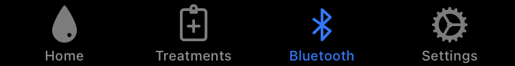
In this page, we will go through the method of connecting a CGM system to xDrip4iOS so that this receives real-time CGM data from your sensor.
Firstly, make sure you have correctly set xDrip4iOS as a Master device and you have chosen the units that your BG should be displayed in.
Do not try and connect to your CGM transmitter from the Bluetooth menu on your iPhone. You must only connect from within the xDrip4iOS app.
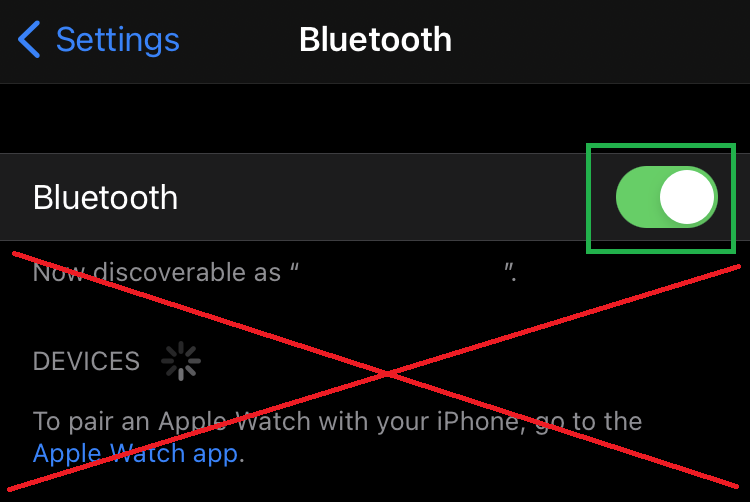
Before continuing, please check the compatibility tables to make sure that your CGM system is compatible.
Libre⌁
Libre 2 Direct Connection⌁
Compatibility
This is only valid for the European Libre 2 sensor (aka Libre2 EU). More information here.
Firstly make sure that your Libre 2 sensor is started and working. If you scan the sensor with the LibreLink app, can you see the values/graph?
If not, start the sensor from the LibreLink app or put a new sensor on and start it. Then go back to the previous step until it works.
If yes, then let's continue.
Disable LibreLink Bluetooth Permission
To avoid problems with the LibreLink app "stealing" the bluetooth connection from xDrip4iOS, we need to ensure that the LibreLink app has it's bluetooth permissions disabled.
Go to your iPhone Settings and scroll down to LibreLink. Select the app and in the options, disable Bluetooth.
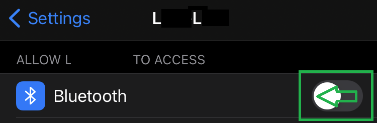
Connect to the Libre 2
Go to the Bluetooth tab and choose CGM as your Device Type, press OK.
If you already have a previous CGM added, you will get a warning to say that you can only have one CGM device added at a time. Please delete the previous device and try again.
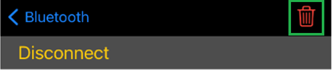
In the Transmitter Types, select Libre 2 and click OK.
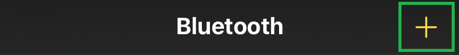
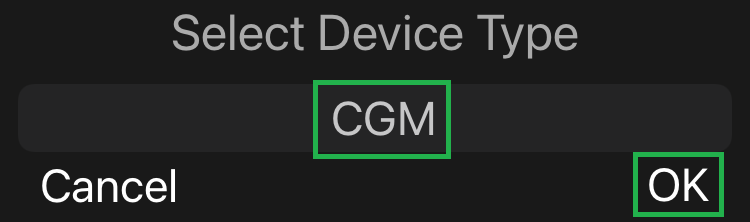
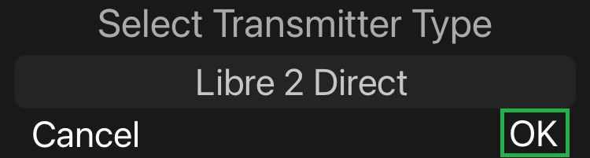
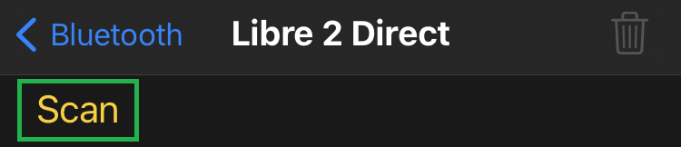
You will get a message to Scan your sensor with the NFC antenna of your iPhone. You should scan the sensor as you would to start/read the sensor using the Libre app.
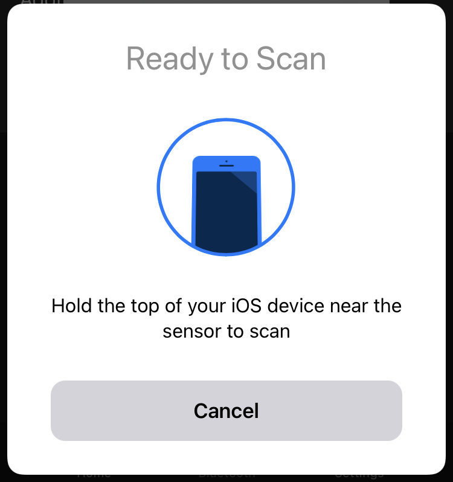
If you get an error message, please repeat adding the Libre 2 and scan again.
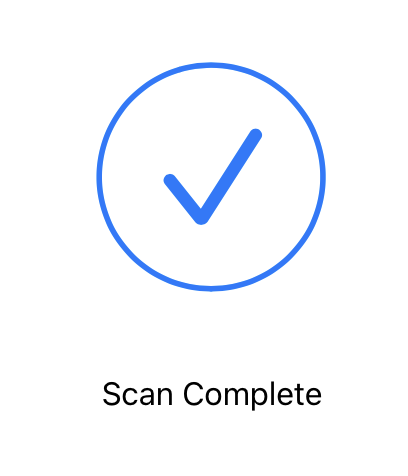
Once your sensor has been scanned successfully, you will see a message asking you to keep xDrip4iOS open whilst the Bluetooth connection is made. Just leave your iPhone on the table and have a coffee. DO NOT play Roblox, watch Netflix or listen to Spotify. Put the phone down without touching it and keep it close to you.
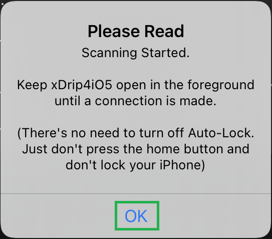
When xDrip4iOS finds your sensor, you will get a message saying the the sensor has been connected correctly. Click OK.
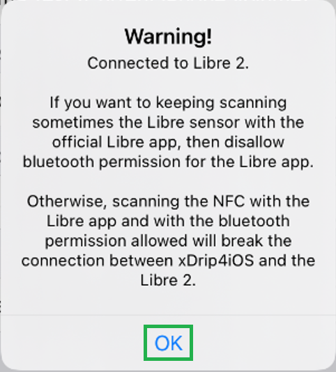
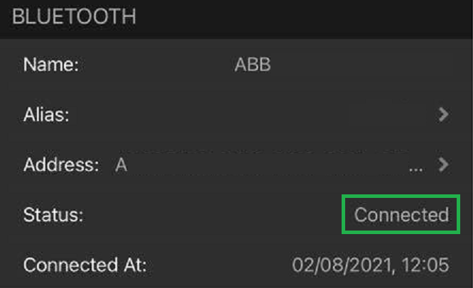
You can now choose if you want to use the Libre algorithm or deselect this option to use the xDrip algorithm with manual calibrations (recommended).
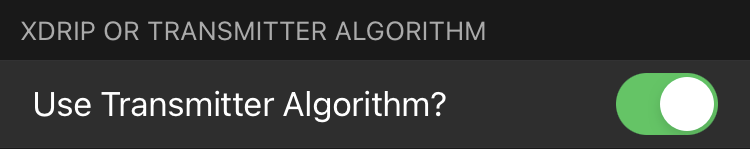
Wait for up to 10-15 minutes for xDrip4iOS to receive the first two readings from your sensor.
-
If you are using the Libre algorithm, you will then automatically start getting values.
-
If you are using the xDrip algorithm, xDrip4iOS will ask you for an initial calibration. Make sure you use a good blood glucose meter and follow the calibration rules where possible.
Libre 1/2 with a Transmitter⌁
Compatibility
This method is only valid for the European Libre 1 or Libre 2 sensors with a compatible transmitter such as MiaoMiao, Bubble, Droplet...
Firstly make sure that your Libre sensor is started and working. If you scan the sensor with the LibreLink app, can you see the values/graph?
If not, start the sensor from the LibreLink app or put a new sensor on and start it. Then go back to the previous step until it works.
If yes, then let's continue.
Add your Transmitter
To to the Bluetooth tab and click the + button to add a new Device Type.
Select CGM and then chose your transmitter type from the list.
You will get a message asking you to keep xDrip4iOS open whilst the bluetooth connection is made with your transmitter. Just leave your iPhone on the table and have a coffee. DO NOT play Roblox, watch Netflix or listen to Spotify. Put the phone down without touching it and keep it close to you. Do it now.
When xDrip4iOS finds your transmitter, you will get a message saying that it has been connected correctly. Click OK.
You can now choose if you want to use the Libre algorithm or deselect this option to use the xDrip algorithm with manual calibrations (recommended).
Wait for up to 10-15 minutes for xDrip4iOS to receive the first two readings from your sensor.
-
If you are using the Libre algorithm, you will then automatically start getting values.
-
If you are using the xDrip algorithm, xDrip4iOS will ask you for an initial calibration. Make sure you use a good blood glucose meter and follow the calibration rules where possible.
Dexcom⌁
Compatibility
This method is valid for all Dexcom G4/G5 systems and also G6 up until "Firefly" transmitters. See here for more information.
Dexcom G4
To connect to a Dexcom G4 transmitter, a xDrip Wireless Bridge (Wixel) is needed. More information is available here
To to the Bluetooth tab and click the + button to add a new Device Type.
Select CGM and then chose your Dexcom system (G4/G5/G6) from the list.
You will be prompted to input your Transmitter ID (for example: 80H9W4).
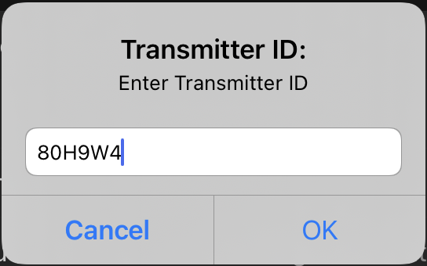
Once you have entered your Transmitter ID, you will see a message asking you to keep xDrip4iOS open whilst the transmitter is found and a bluetooth connection is made. Just leave your iPhone on the table and have a coffee. DO NOT play Roblox, watch Netflix or listen to Spotify. Put the phone down without touching it and stay close to it.
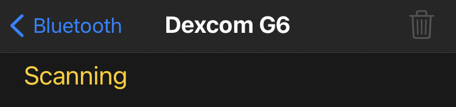
When xDrip4iOS finds your transmitter, you will get a message saying that it has been connected correctly. Click OK.
Dexcom Share Upload⌁
You can configure xDrip4iOS to upload your sensor data to your Dexcom Share account.
Dexcom Share
You must have an invitation sent (even to yourself) by the Dexcom app to enable sharing. You can then use xDrip4iOS to share your data with any follower app (official and third party).
This will not upload your data inside Clarity as only the Dexcom app can do this.
In the Settings Menu, enable Upload to Dexcom Share, enter you account/user name and password.
If you are inside the US, then also select the Use Dexcom US Servers option. If you are anywhere else (Canada, Europe etc, do not select this option)
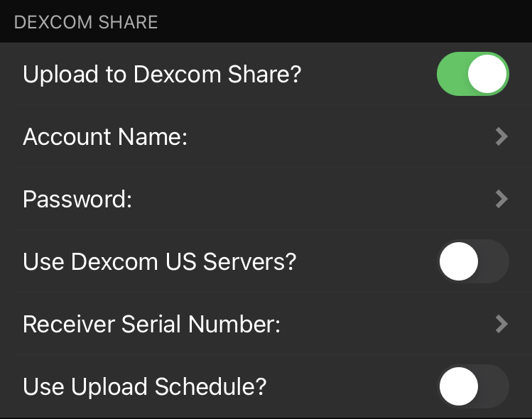
Nightscout Upload⌁
Nightscout (also known as "CGM In The Cloud") is an open-source, cloud-based platform for storing, sharing and analysing CGM and treament data.

Nightscout is one of the key pillars at the heart of the #wearenotwaiting community.
We fully recommend all users to take advantage of this platform as it will open up many possibilities (sharing CGM data/alarms with family members, sharing CGM values to other devices, watches, tablets).
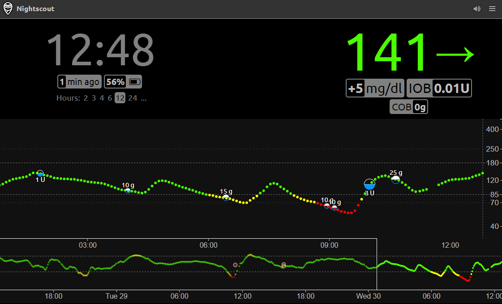
Please see the main Nightscout documentation site for further information and set-up instructions.
Further help and support can be found in the CGM In The Cloud Facebook group here
In order to connect xDrip4iOS to Nightscout and upload your CGM data, in the Settings Menu, select Enable Nightscout.
You should enter your Nightscout URL as per the service you are using.
Examples (change mynightscout and 12345 as necessary)
- Heroku/Mongo:
https://mynightscout.herokuapp.com - ns.10be.de (1):
https://mynightscout.10be.dePort:12345 - T1Pal:
https://mynightscout.t1pal.com
(1) If your URL needs a port number to access the service (such as the default mode of ns.10be.de), then enter this number in Port.
Finally, enter your API_SECRET which should be a 12 character "password" that you configured when setting up your Nightscout installation. Without this, xDrip4iOS will not be able to write data to Nightscout.
If you want to check that your Nightscout credentials are correct, you can press the "Test Connection" button and you will get a message with the result of the test.